If you’ve started a new session, please first do the following:
library("readr")
library("tidyr")
library("dplyr", warn.conflicts = FALSE)
d = read_csv("../data/foodIntake2.csv", skip=1)## New names:
## Rows: 33 Columns: 37
## -- Column specification
## -------------------------------------------------------- Delimiter: "," dbl
## (36): ...1, 528, 535, 559, 563, 570, 571, 572, 573, 583, 593, 595, 599, ... lgl
## (1): ...20
## i Use `spec()` to retrieve the full column specification for this data. i
## Specify the column types or set `show_col_types = FALSE` to quiet this message.
## * `` -> `...1`
## * `` -> `...20`colnames(d)[c(1,20)] = c("Week", "Skip")
d2 = d %>% select(-Skip) %>% gather(Cage, Value, -Week)
d2$Group = c(rep(rep("Control", 33), 18), rep(rep("Treatment", 33), 17))This is the messy “food intake in two groups of mice over time” dataset from the tidyr section.
Also, load/install ggplot2
#install.packages("ggplot2") #If you need it
library(ggplot2)##
## Attaching package: 'ggplot2'## The following object is masked _by_ '.GlobalEnv':
##
## msleep
- R’s base graphics have inconsistent naming/formatting
- It can get difficult to do anything fancy
- The “grammar of graphics” better describes how most people think
- A dataset
- A coordinate system (an X and maybe a Y)
- Some sort of geometric object (lines, points, bars, etc.)
- ggplot2 is extremely flexible and powerful
- Consistent naming/formatting
- Steeper learning curve
- There are a number of extensions built upon ggplot2 (e.g., ggbio, plotly)
N.B., this document is heavily influenced by the Data Carpentry ggplot2 presentation
ggplot2 uses dataframe with multiple columns to create complex plots. The defaults are generally more or less publication ready (see some of the themes above for improvements).
Graphic are created step by stey by adding new elements (plots, axis labels, range changes, etc.).
To build a ggplot we need to:
data
argumentggplot(data = d2)aes), that maps variables in the
data to axes on the plot or to plotting size, shape, color, etc.,ggplot(data = d2, aes(x = Week, y = Value))geoms – graphical representation of the data in the
plot (points, lines, bars). To add a geom to the plot use +
operator:ggplot(data = d2, aes(x = Week, y = Value)) +
geom_point()## Warning: Removed 326 rows containing missing values (`geom_point()`).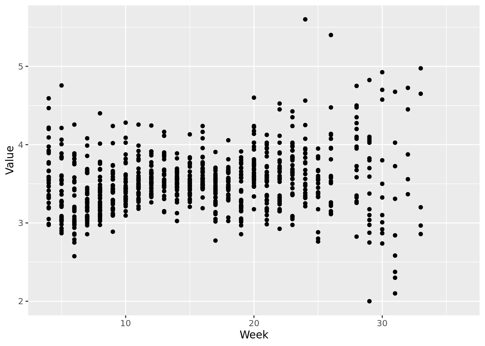
geoms often have additional aesthetics:Notes:
ggplot() function can be seen
by any geom layers that you add. i.e. these are universal plot
settingsaes()One extremely useful feature is to be able to change aesthetics according to columns in a dataframe.
ggplot(data = d2, aes(x = Week, y = Value)) +
geom_point(aes(color=Group, shape=Group))## Warning: Removed 326 rows containing missing values (`geom_point()`).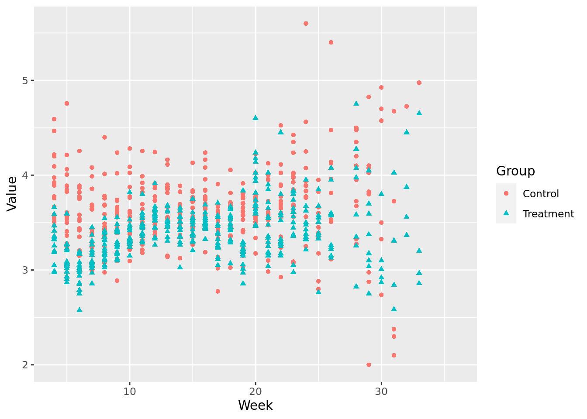
colour if you preferThings such as transparency can also be added:
ggplot(data = d2, aes(x = Week, y = Value)) +
geom_point(alpha=0.5, aes(color=Group, shape=Group))## Warning: Removed 326 rows containing missing values (`geom_point()`).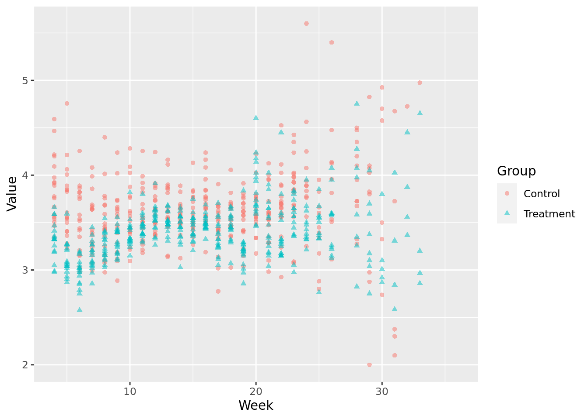
alpha isn’t specified in an aesthetic, it can’t
see the dataframe columnsThere are, of course, more than just scatter plots. Line plots are also quite common.
ggplot(data = d2, aes(x = Week, y = Value)) +
geom_line(aes(color=Cage))## Warning: Removed 301 rows containing missing values (`geom_line()`).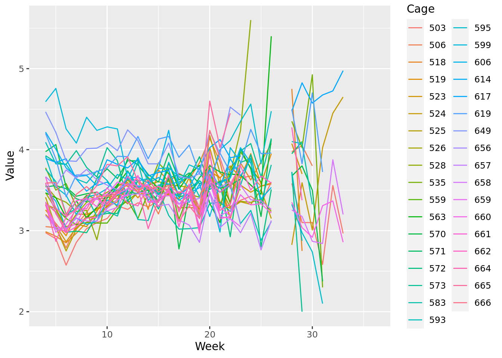
NAs are not removed but produce a warning. If
we filter them out then there won’t be a gap in the graph (I wouldn’t
recommend that, since it’s hiding the gap).d3 = d2 %>% filter(!is.na(Value))
ggplot(data = d3, aes(x=Week, y=Value)) +
geom_line(aes(color=Cage))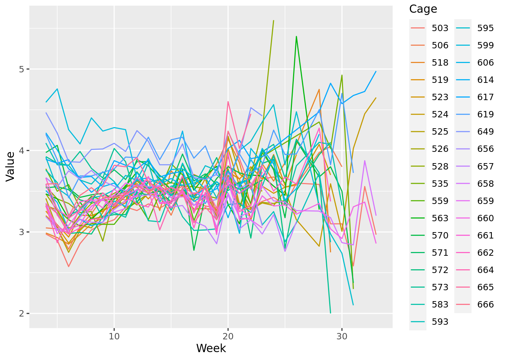
Can you make a scatter plot that also includes lines?
ggplot(d2, aes(x = Week, y = Value)) +
geom_line(aes(color = Cage)) +
geom_point(aes(color = Group, shape = Group))## Warning: Removed 301 rows containing missing values (`geom_line()`).## Warning: Removed 326 rows containing missing values (`geom_point()`).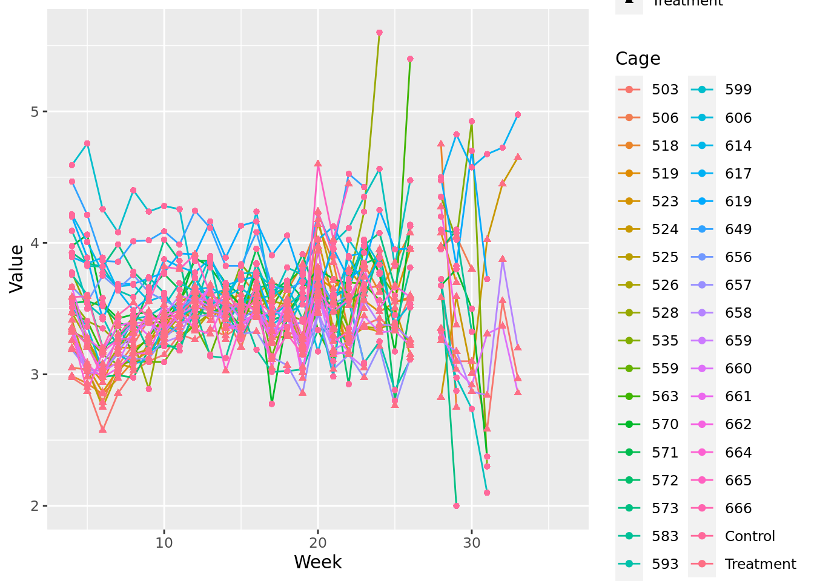
As noted previously, column names are used for things like axis and legend titles. Since we typically keep these short but want the displayed labels to be rather longer, these typically need to be replaced.
ggplot(data = d2, aes(x = Week, y = Value)) +
geom_point(alpha=0.5, aes(color=Group, shape=Group)) +
labs(x="Measurement week", y="Food intake (g)")## Warning: Removed 326 rows containing missing values (`geom_point()`).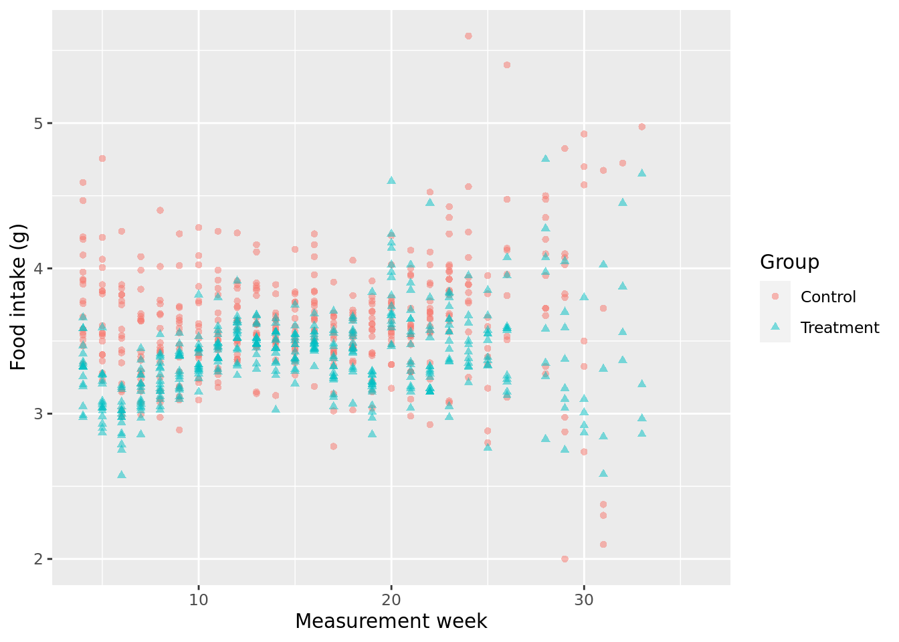
If you’re the type of person that likes graph titles, then you can
add them as well (either with title="something" or adding a
ggtitle("something") layer).
ggplot(data = d2, aes(x = Week, y = Value)) +
geom_point(alpha=0.5, aes(color=Group, shape=Group)) +
labs(x="Measurement week", y=expression(paste(mu, "A/", mu, "F", sep="")))## Warning: Removed 326 rows containing missing values (`geom_point()`).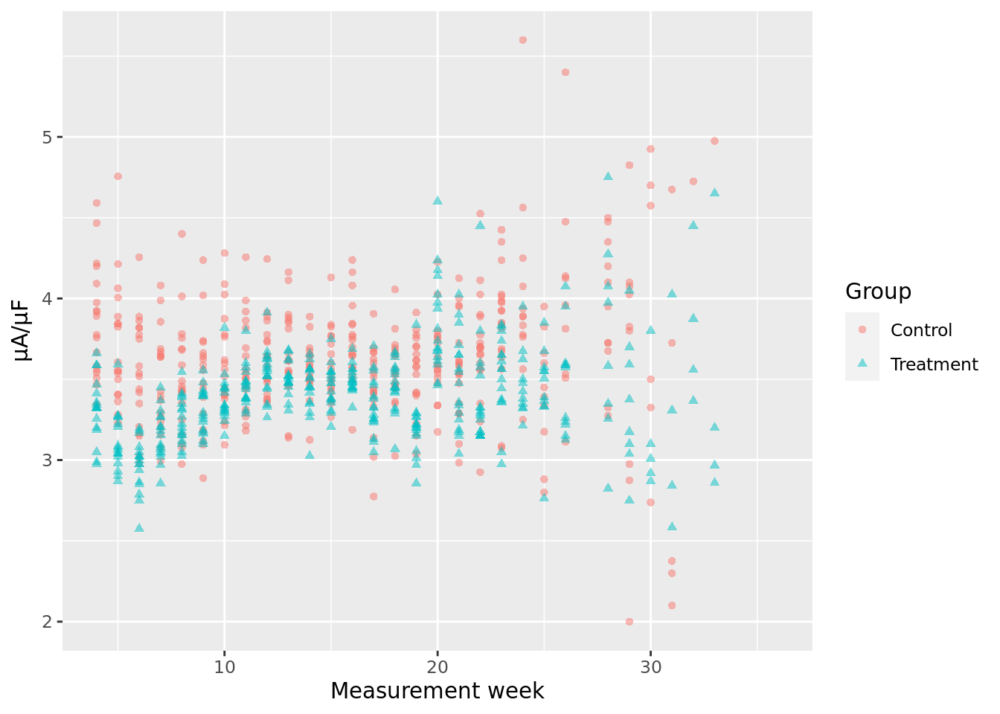
Lines and points show literally all of the information…which is really hard to interpret. How might you use dplyr to get rid of all the lines and plut the group average by week?
d3 = d2 %>% filter(!is.na(Value)) %>% group_by(Group, Week) %>% mutate(avg=mean(Value))
ggplot(data = d3, aes(x = Week, y = avg)) +
geom_point(alpha=0.5, aes(color=Group, shape=Group)) +
labs(x="Measurement week", y="Food intake (g)")But really what’s the fun of that when we can have ggplot do it for us:
ggplot(data = d2, aes(x = Week, y = Value)) +
geom_smooth(aes(color=Group, fill=Group)) +
labs(x="Measurement week", y="Food intake (g)")## `geom_smooth()` using method = 'loess' and formula = 'y ~ x'## Warning: Removed 326 rows containing non-finite values (`stat_smooth()`).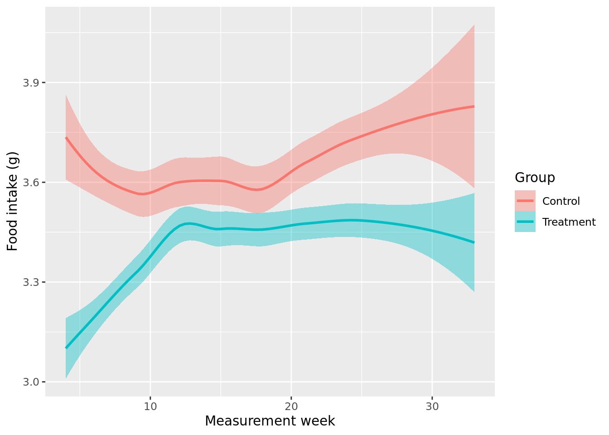
The shaded regions are the 95% confidence intervals. The amount of
smoothing is controlled by the span parameter to
geom_smooth() and defaults to 0.75. Try spans of 0.1 or
0.3.
Let’s look again at the line plot:
ggplot(data = d2, aes(x = Week, y = Value, group=Cage)) +
geom_line(aes(color=Group)) +
labs(x="Measurement week", y="Food intake (g)")## Warning: Removed 301 rows containing missing values (`geom_line()`).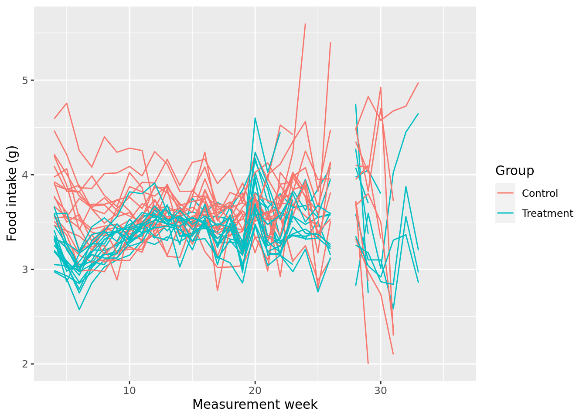
I’ve grouped each cage into its own line and then colored by group
(Not sure why the grouping was needed? Replot that without
group=Cage.). That’s nice, but the overlapping groups are
really messy. Ideally we’d just plot the groups independently.
g = ggplot(data = d2, aes(x = Week, y = Value, group=Cage))
g = g + geom_line(aes(color=Cage))
g = g + labs(x="Measurement week", y="Food intake (g)")
g = g + facet_grid(Group~.)
g## Warning: Removed 301 rows containing missing values (`geom_line()`).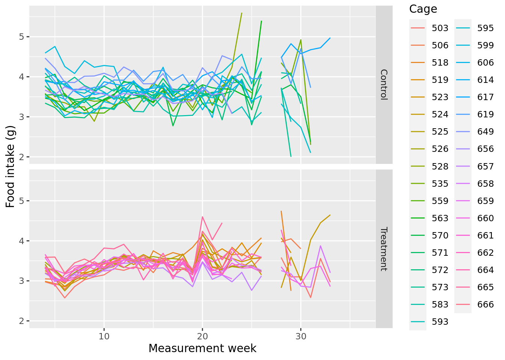
The mouse food intake dataset isn’t so useful for bar/box plots. Let’s use a different one:
head(mpg)## # A tibble: 6 x 11
## manufacturer model displ year cyl trans drv cty hwy fl class
## <chr> <chr> <dbl> <int> <int> <chr> <chr> <int> <int> <chr> <chr>
## 1 audi a4 1.8 1999 4 auto(l5) f 18 29 p compa~
## 2 audi a4 1.8 1999 4 manual(m5) f 21 29 p compa~
## 3 audi a4 2 2008 4 manual(m6) f 20 31 p compa~
## 4 audi a4 2 2008 4 auto(av) f 21 30 p compa~
## 5 audi a4 2.8 1999 6 auto(l5) f 16 26 p compa~
## 6 audi a4 2.8 1999 6 manual(m5) f 18 26 p compa~The mpg package has fuel economy statistics for 38 car
models for the years 1999-2008. Let’s look at number of cars by
class.
g = ggplot(data=mpg, aes(x=class))
g = g + geom_bar()
g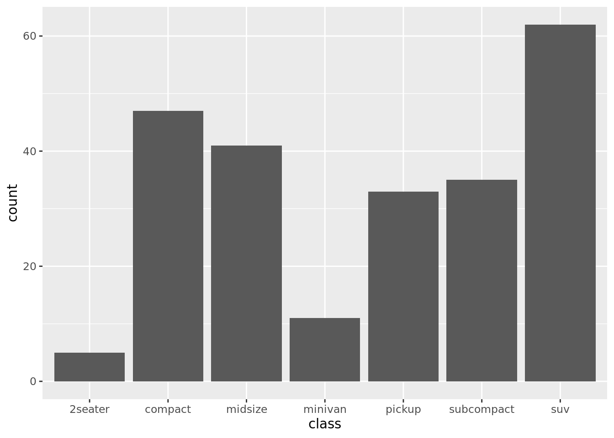
If you have a value that you’d like to use as the bar height, you can use that instead, but you must then use the “identity” statistic instead of count.
mpg2 = mpg %>% group_by(class) %>% summarise(avg=mean(displ))
g = ggplot(data=mpg2, aes(x=class, y=avg))
g = g + geom_bar(stat="identity")
g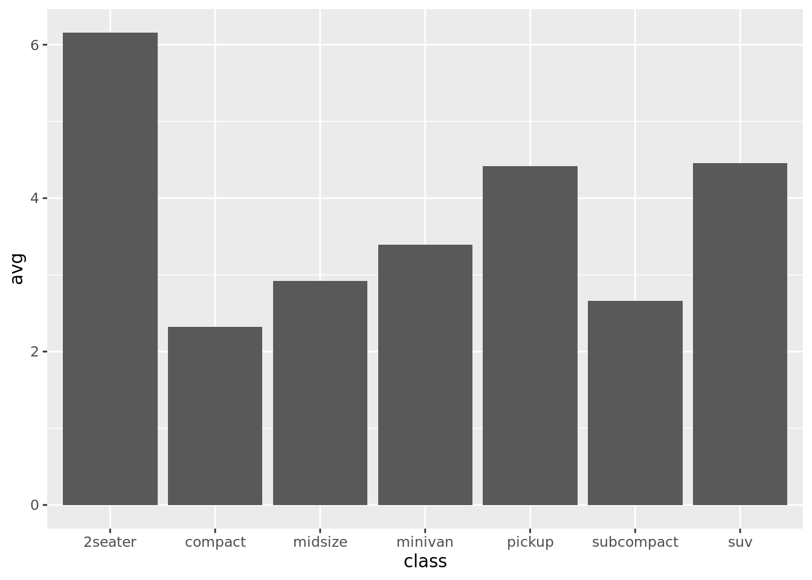
With multiple values per-class like this it’d be nicer to just make a box plot.
g = ggplot(data=mpg, aes(x=class, y=displ))
g = g + geom_boxplot()
g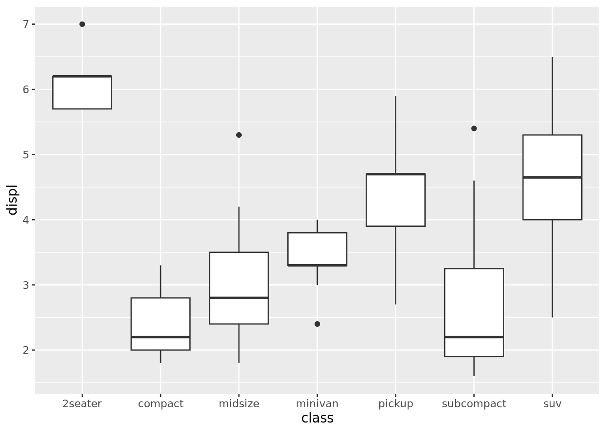
Sometimes people want the points layered on top of the box plots (mostly for seeing the number of observations). Layering is easy with ggplot2.
g = ggplot(data=mpg, aes(x=class, y=displ))
g = g + geom_boxplot()
g = g + geom_point(position="jitter", color="tomato")
g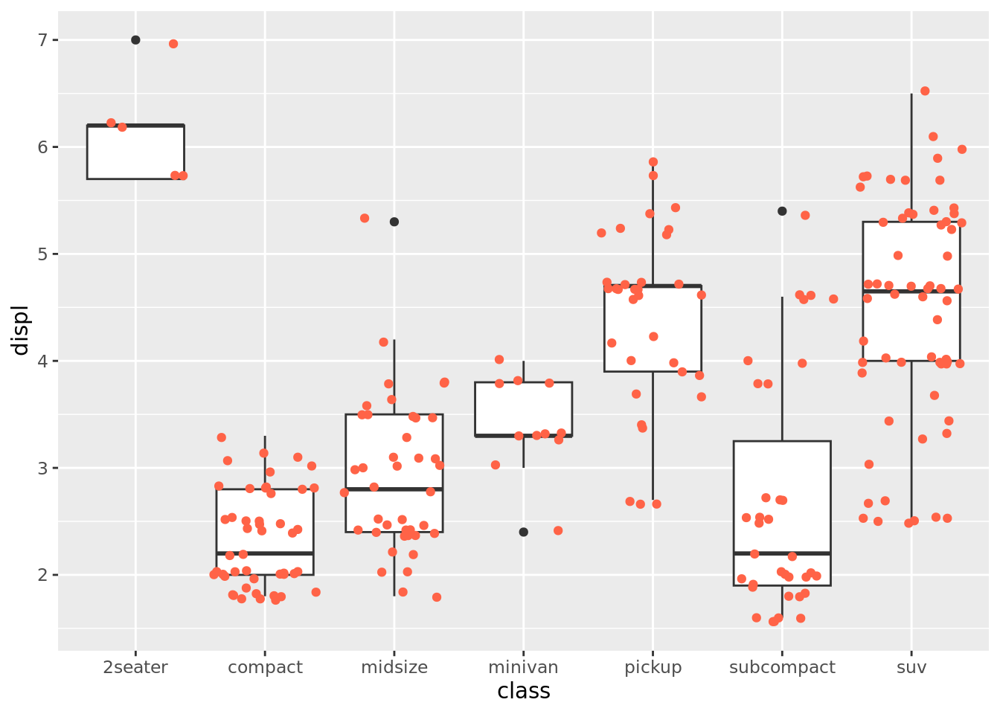
The downside to box plots is that they hide the underlying data
(e.g., the n). For that reason, violin and dot (sometimes
call “beehive”) plots are increasingly popular.
g = ggplot(data=mpg, aes(x=class, y=displ))
g = g + geom_violin()
g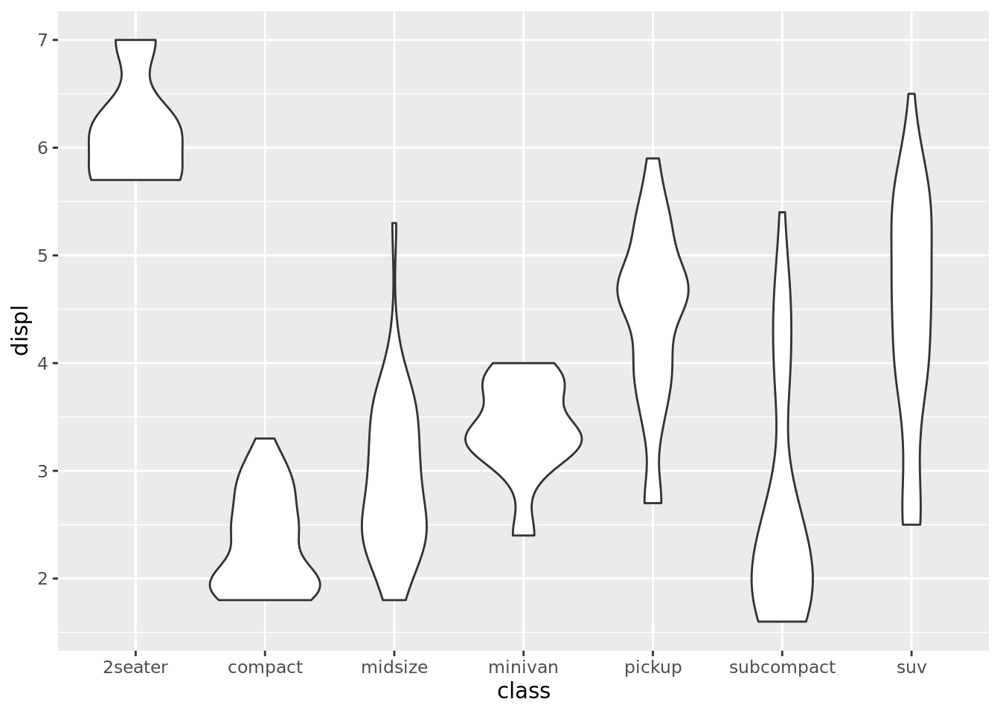
By default, everything is scaled to the same area, but that can be
changed (so the n is apparent).
g = ggplot(data=mpg, aes(x=class, y=displ))
g = g + geom_violin(scale="count")
g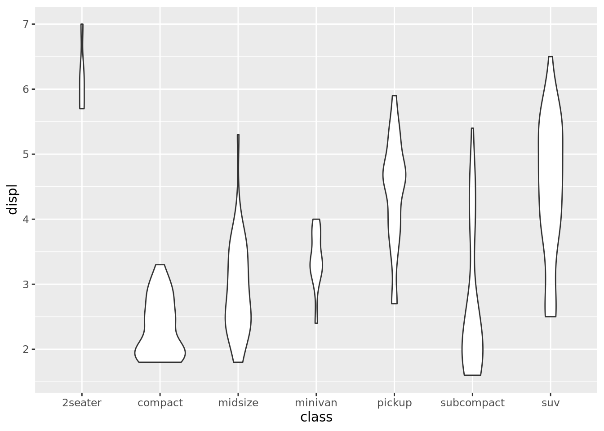
Now the 2 seater class is put in better perspective.
Of course black and white graphs are rather boring, so we tend to color things and tweak the smoothing:
g = ggplot(data=mpg, aes(x=class, y=displ))
g = g + geom_violin(scale="count", adjust=0.5, aes(color=class, fill=class))
g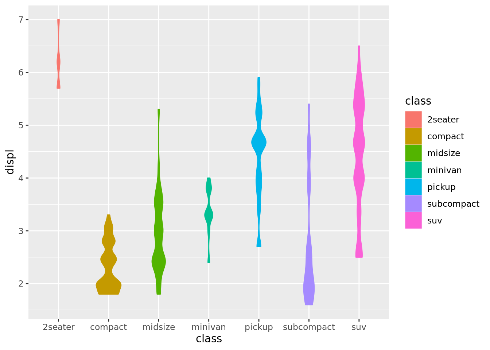
Often violin plots and dot plots are combined.
g = ggplot(data=mpg, aes(x=class, y=displ))
g = g + geom_violin(scale="count", adjust=0.5)
g = g + geom_dotplot(binaxis="y", stackdir="center", dotsize=0.3, binwidth=0.1, aes(color=class, fill=class))
g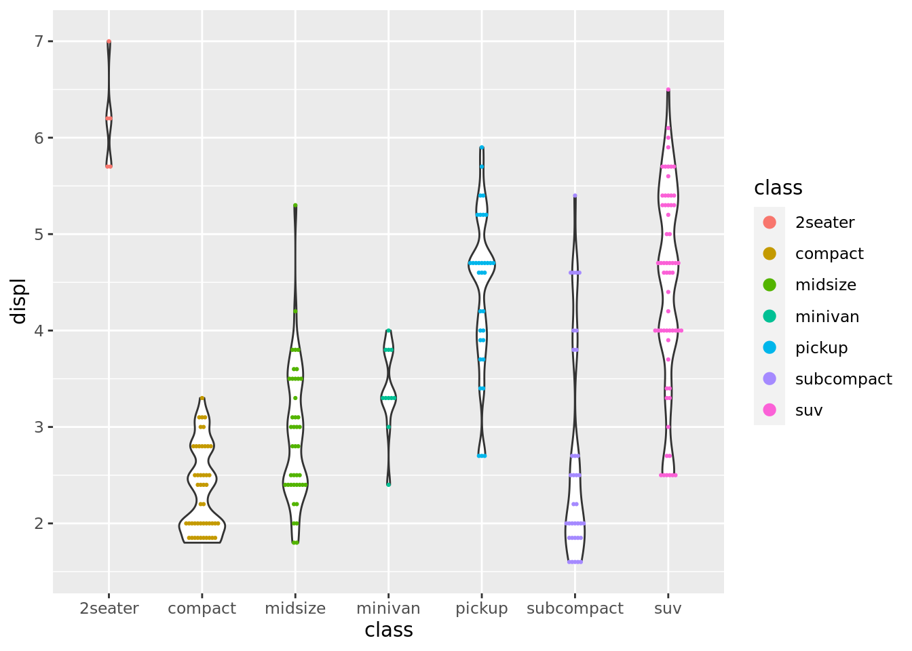
When R makes factors, it orders them alphabetically. Inevitably that will produce an order that will drive your PI mad.
g = ggplot(data=mpg, aes(x=class, y=displ))
g = g + geom_violin(scale="count", aes(color=class, fill=class))
g = g + scale_x_discrete(limits=c("subcompact", "compact", "midsize", "minivan", "pickup", "suv", "2seater"))
g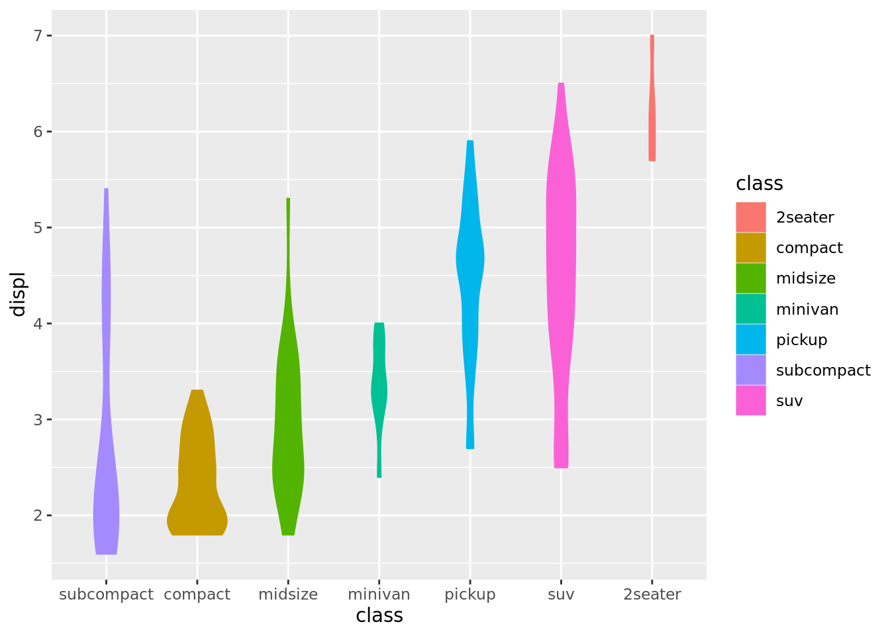
Similarly, group names are often chosen for ease of entry, not how they should be displayed.
g = ggplot(data=mpg, aes(x=class, y=displ))
g = g + geom_violin(scale="count", aes(color=class, fill=class))
g = g + scale_x_discrete(limits=c("subcompact", "compact", "midsize", "minivan", "pickup", "suv", "2seater"),
labels=c("Subcompact", "Compact", "Midsize", "Minivan", "Pickup Truck", "SUV", "Sports Car"))
g = g + labs(x="", y="Engine Displacement (liters)")
g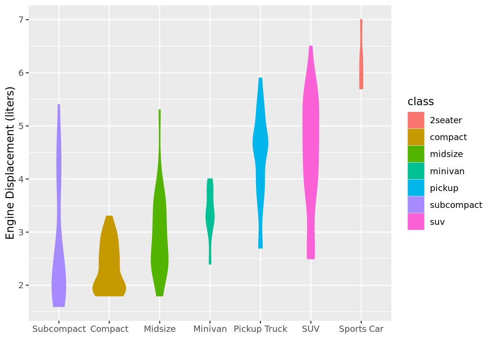
And half the time you’ll decide you don’t need the legend:
g = ggplot(data=mpg, aes(x=class, y=displ))
g = g + geom_violin(scale="count", aes(color=class, fill=class))
g = g + scale_x_discrete(limits=c("subcompact", "compact", "midsize", "minivan", "pickup", "suv", "2seater"),
labels=c("Subcompact", "Compact", "Midsize", "Minivan", "Pickup Truck", "SUV", "Sports Car"))
g = g + labs(x="", y="Engine Displacement (liters)")
g = g + guides(fill="none", color="none")
g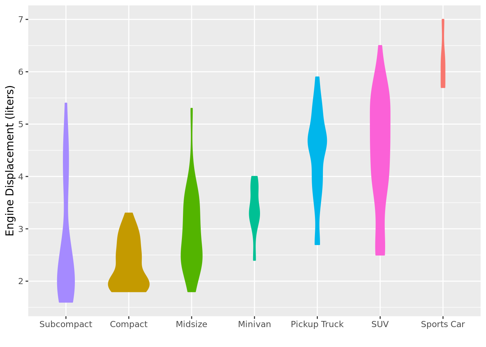
Or alternatively you just want to adjust the legend:
g = ggplot(data=mpg, aes(x=class, y=displ))
g = g + geom_violin(scale="count", aes(fill=class))
g = g + scale_x_discrete(limits=c("subcompact", "compact", "midsize", "minivan", "pickup", "suv", "2seater"),
labels=c("Subcompact", "Compact", "Midsize", "Minivan", "Pickup Truck", "SUV", "Sports Car"))
g = g + labs(x="", y="Engine Displacement (liters)")
g = g + guides(fill="none", color="none")
g = g + scale_fill_discrete(name="Class",
limits=c("subcompact", "compact", "midsize", "minivan", "pickup", "suv", "2seater"),
labels=c("Subcompact", "Compact", "Midsize", "Minivan", "Pickup Truck", "SUV", "Sports Car"))
g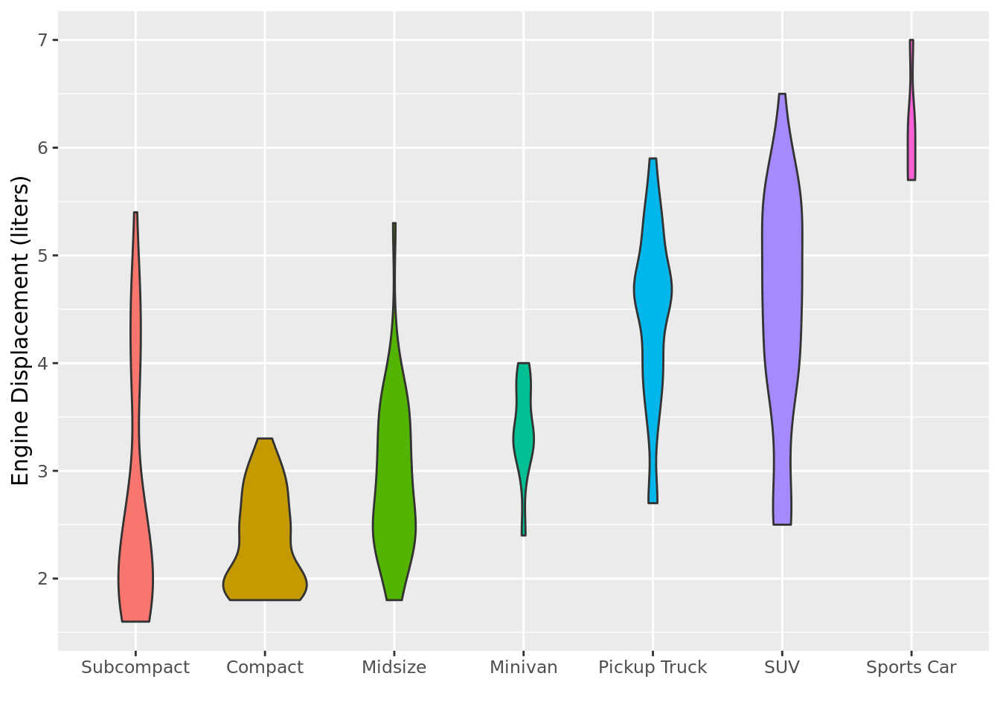
scale_color_discrete() to match that of
scale_fill_discrete().The other common annoying task is changing the colors. Inevitably either you or your PI will want consistent colors used across different figures, with each having vey different data.
g2 = g + scale_fill_manual(name="Class",
limits=c("subcompact", "compact", "midsize", "minivan", "pickup", "suv", "2seater"),
labels=c("Subcompact", "Compact", "Midsize", "Minivan", "Pickup Truck", "SUV", "Sports Car"),
values=c("#FFFFFF", "skyblue", "indianred", "chocolate", "turquoise", "darkorchid", "aquamarine"))## Scale for fill is already present.
## Adding another scale for fill, which will replace the existing scale.g2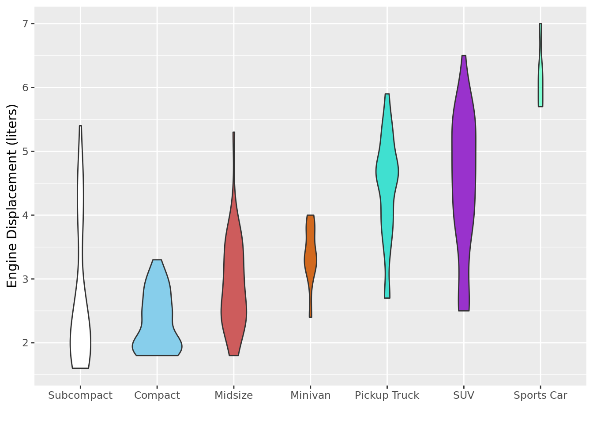
You can use either names or hex values (e.g., “#FFFFFF”), with the latter more useful for consistency across programs.
Some people hate the background grid, even though it helps in comparing values, so you can always remove it. Compare the following:
g2 + theme_bw()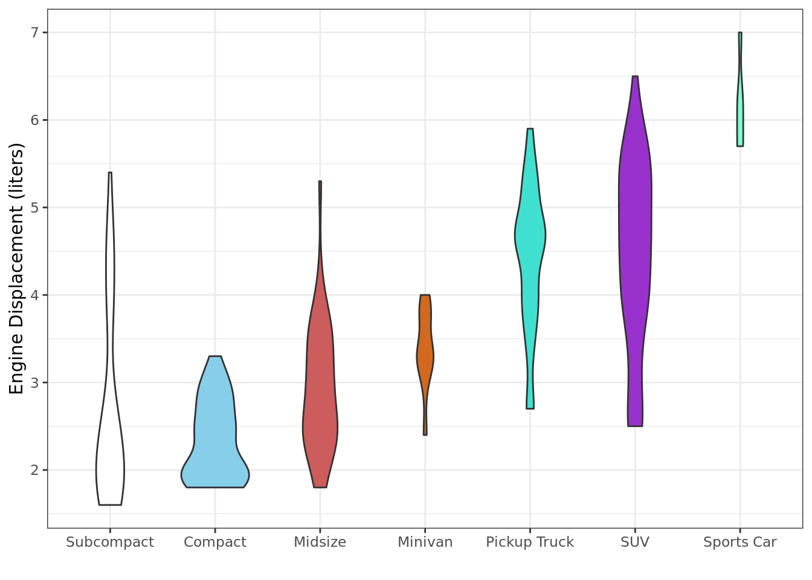
g2 + theme_classic()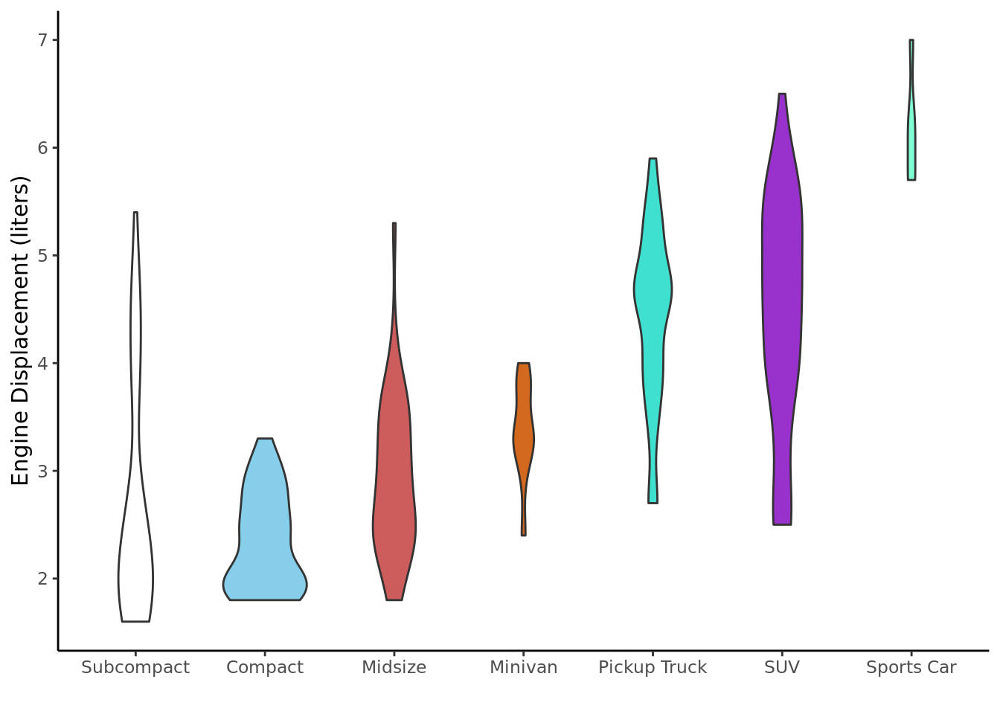
g2 + theme(panel.background=element_blank(),
axis.line.x=element_line(color="black"),
axis.line.y=element_line(color="black"),
axis.text.x=element_text(angle=-90, hjust=0, vjust=0.5))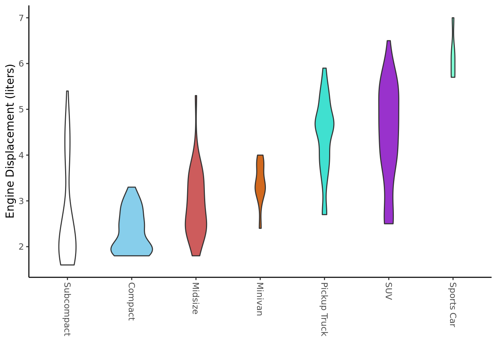
Themes are just functions, so if you really want to you can write one
and then + theme_foo() it on all of your plots.
This is just scratching the surface of what you can do with ggplot2. As noted earlier, there’s a whole book on this if you really want. From polar coordinates, to heatmaps to geographic maps, you can do pretty much anything in ggplot2. Have a look at the online manual for many more details.
Note that while you can change everything in ggplot, somethings are probably simpler to do in Adobe Illustrator (or similar), since you’re saving everything as a PDF anyway.
Load the hflights.txt file from data/. This
is another tab-separated dataset with a single header line. This is a
dataset containing information on flights departing Houston in 2011. Of
particular interest are the arrival times (ArrTime),
arrival delays times (ArrDelay) and day of the week
(DayOfWeek). Are you more likely to have a delay at any
particular time of day or day of the week? We don’t care about p-values,
we want differences we can actually see (i.e., something that we’d
notice as a passenger).
hflights = read_tsv("../data/hflights.txt")## Rows: 227496 Columns: 21
## -- Column specification --------------------------------------------------------
## Delimiter: "\t"
## chr (5): UniqueCarrier, TailNum, Origin, Dest, CancellationCode
## dbl (16): Year, Month, DayofMonth, DayOfWeek, DepTime, ArrTime, FlightNum, A...
##
## i Use `spec()` to retrieve the full column specification for this data.
## i Specify the column types or set `show_col_types = FALSE` to quiet this message.ggplot(hflights, aes(x=factor(DayOfWeek), y=ArrDelay)) +
geom_boxplot() +
xlab("Day of week") + ylab("Arrival Delay (Minutes)")## Warning: Removed 3622 rows containing non-finite values (`stat_boxplot()`).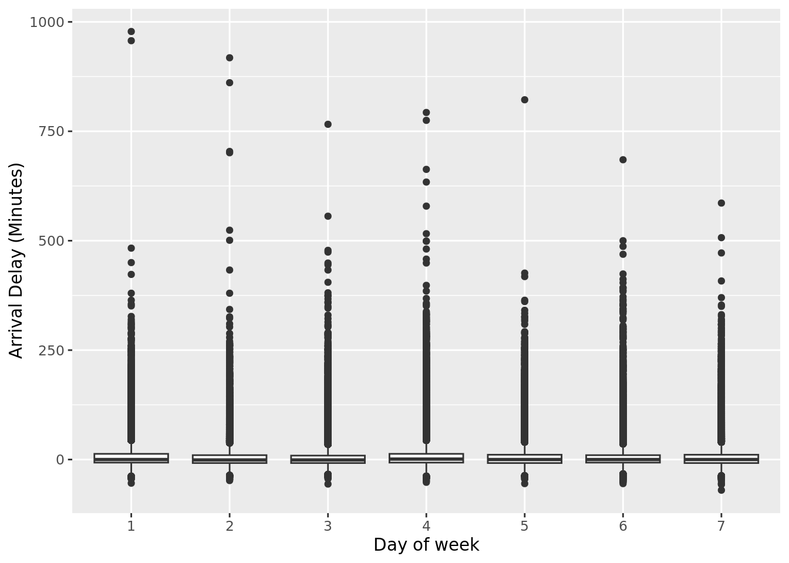
No compelling difference in delay as a function of day. What about as a function of time of day?
ggplot(hflights, aes(x=ArrTime, y=ArrDelay)) +
geom_smooth(method="lm") +
xlab("Time of day (HHMM)") + ylab("Delay (Minutes)")## `geom_smooth()` using formula = 'y ~ x'## Warning: Removed 3622 rows containing non-finite values (`stat_smooth()`).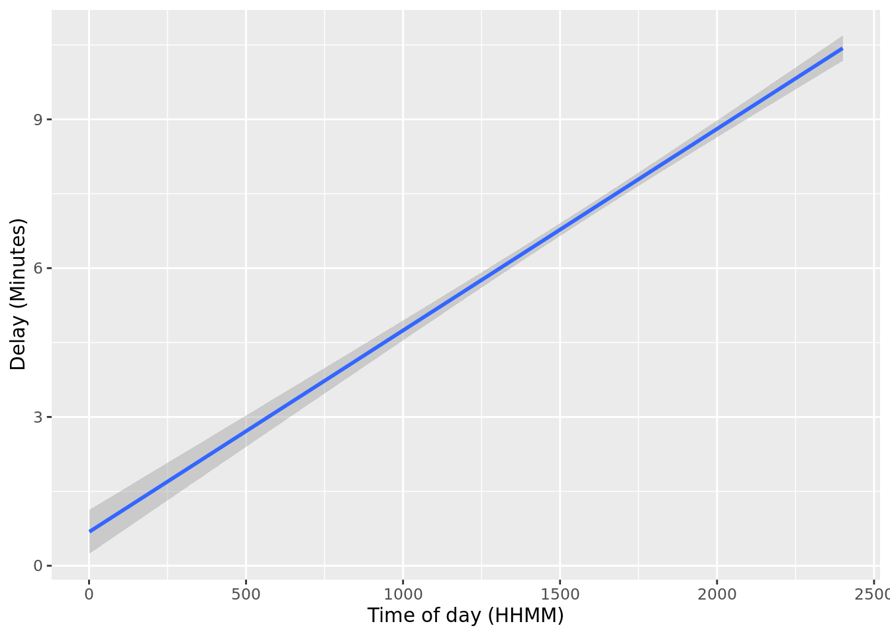
ggplot(hflights, aes(x=ArrTime)) +
geom_bar()## Warning: Removed 3066 rows containing non-finite values (`stat_count()`).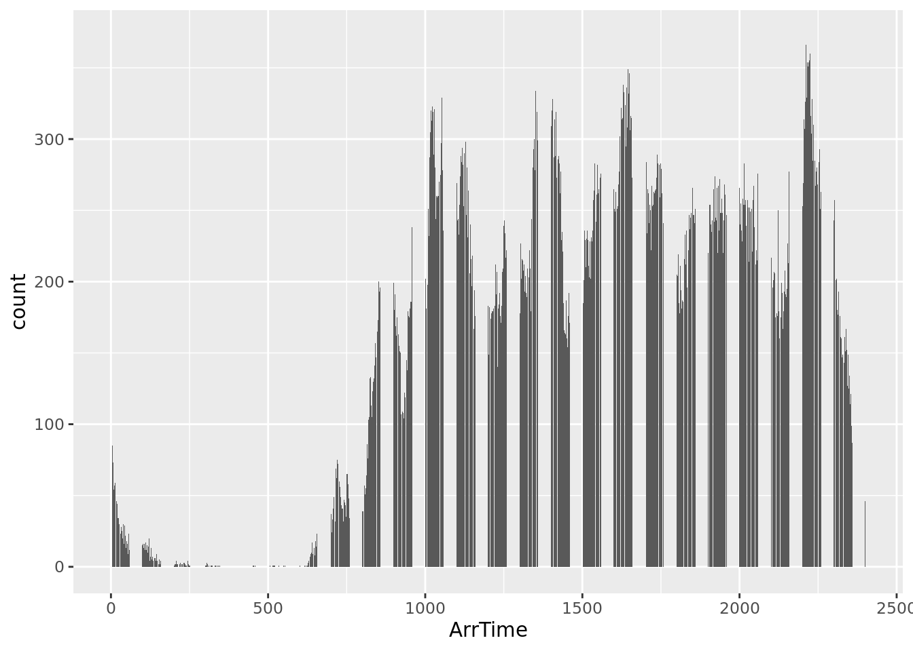
There also isn’t really a delay according to time of day. Rather, you tend to see more delays later in the day because there are more flights then.
Bioinfo Core @ MPI-IE Freiburg (2023)